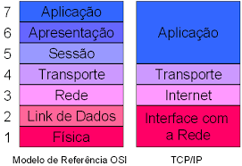

No Cisco Packet Tracer, nós criamos um servidor web, dns e dhcp para hospedarmos o nosso html lá e dar o nome de um domínio para nosso site.

O nome OSI vem de uma abreviação para "Open Systems Interconnection". Este modelo é o primeiro modelo padrão de comunicação entre sistemas de computadores e redes, ele faz uso de sete camadas para garantir essa conversa. O que o modelo OSI faz é agrupar esses protocolos em grupos específicos, ou camadas.
O TCP/IP são dois protocolos e esses dois garantem que pacotes de informações cheguem a seu destino de forma correta e segura. O modelo TCP/IP possui apenas 4 camadas que englobam as 7 camadas do modelo OSI. As camadas mais acima recebem informações e as distribui para as camadas inferiores, atribuindo a cada uma delas a função que exercerá durante a comunicação.
O Protocolo UDP é um protocolo de comunicação utilizado em toda a internet para transmissões com validade especialmente limitada, tais como reproduções de vídeo ou pesquisas no DNS. Diferente do TCP ele não é orientado à conexão; Não é confiável como o TCP, ele não garante a entrega completa dos dados; É preciso que dividamos manualmente os dados em datagramas (entidades de dados);
É uma sigla para "Domain System Names" ou Sistema de Nomes de Domínio e é ele quem traduz endereços IP (Internet Protocol) em nomes de sites. Devemos utilizá-lo pois ele reduz o "espaço" de comunicação entre as máquinas e o humano.
O DHCP é um protocolo utilizado em redes de computadores que permite às máquinas obterem um endereço IP automaticamente.
O FTP é composto pelo conjunto de regras que diz para os computadores como transferir arquivos entre diferentes sistemas online. O protocolo FTP pode ser usado dentro de uma rede interna de computadores, ou online entre diferentes servidores web.
HTTP e HTTPS são protocolos de segurança na Internet bastante evidentes quando acessamos sites de banco ou lojas virtuais para realizar transações financeiras.
Um web server é um sistema computacional que hospeda e fornece acesso aos conteúdos e aplicações através da internet. Ao receber uma solicitação de um servidor DNS, o servidor web processa a requisição, buscando o conteúdo solicitado no sistema de arquivos ou em um banco de dados.
No Cisco Packet Tracer, nós criamos um servidor web, dns e dhcp para hospedarmos o nosso html lá e dar o nome de um domínio para nosso site.